- Object ID: 00000018WIA30DF4450GYZ
- Topic ID: id_2022137 Version: 1.14
- Date: Dec 12, 2024 1:42:36 AM
Replacing the 48V power supply
Removal and installation instructions for replacing the Condor power supplies used in the gradient subsystem (XGD) power distribution unit (PDU) with Delta power supplies and a Delta-compatible bracket assembly. This procedure can also be used to replace a faulty Delta power supply.
Prerequisites
| Personnel requirements | |||
|---|---|---|---|
| Required persons | Preliminary requirements | Procedure | Finalization |
| 1 | 5 minutes | 60 minutes | 25 minutes |
| Tools and test equipment | |||
|---|---|---|---|
| Item | Quantity | Part number | Manufacturer |
| Nonmagnetic Titanium Service Tool Kit, Large Set | 1 of either tool kit | 5112581 | - |
| Nonmagnetic Titanium Service Tool Kit, Small Set | 5113258 | - | |
| Consumables | |||
|---|---|---|---|
| Item | Quantity | Part number | Manufacturer |
| GE Equipment Maintenance Sticker | 1 | 5661793 | - |
| Replacement parts | |||
|---|---|---|---|
| Item | Quantity | Part number | Manufacturer |
| Delta 48V 2500W Power Supply | 2, if replacing Condor power supplies | 5745311 | Delta |
| 1, if replacing a faulty Delta power supply | |||
| Delta 48V Power Supply Kit for the Gradient Subsystem (XGD) Power Distribution Unit (PDU) | 1 | 5140621-10 | Delta |
| Delta 48V Power Supply Bracket for the Gradient Subsystem (XGD) Power Distribution Unit (PDU), Blind-Mate | 5343114-10 | Delta | |
About this task
Procedure
- Use one of the following methods to identify the type of power supply currently installed in the PDU:
- Find the manufacturer (Condor or Delta) on the GE Equipment Maintenance Sticker (5661793), which is located on the front of the PDU.
- Look through the PDU vent holes with a flashlight. A Delta power supply has an EnergE label.
Figure 1. PDU vent holes (left) and power supply EnergE label (right) 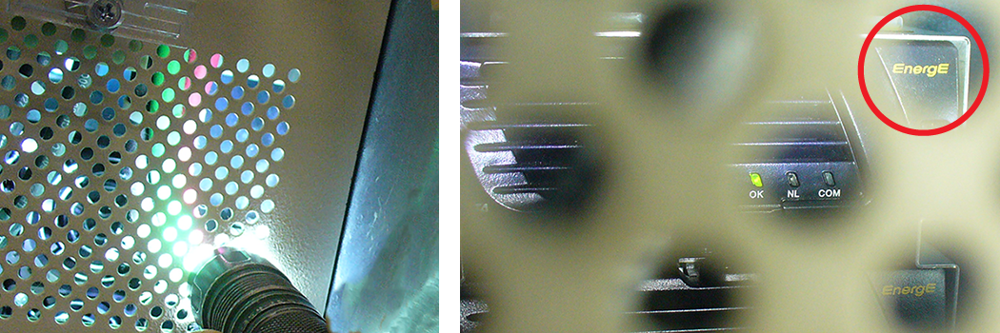
Result
If the faulty power supply is a Condor, follow the steps in this procedure to replace both Condor power supplies with Delta power supplies and a new Delta compatible bracket. If the faulty power supply is a Delta, follow all applicable steps to replace the faulty power supply. - Perform LOTO on the PDU. See Applying LOTO - PGR Power Distribution Unit (PDU)/Gradient Subsystem.
- Remove the four 6-32 x 3/8 screws on the circuit breaker guard using a Phillips screwdriver.Note Do not recycle the screws, as you will use them to reattach the guard.
Figure 2. PDU circuit breaker guard screws 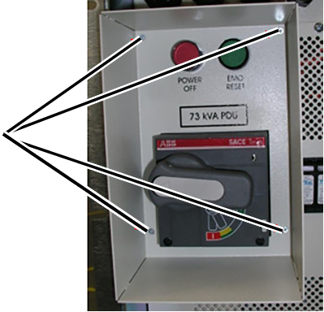
- Remove the 10-32 x 1/2 screws on the front panel using a Phillips screwdriver.Note Do not recycle the screws, as you will use them to reattach the front panel.
Figure 3. PDU front panel screws - XGD (left) and XGD2 (right) 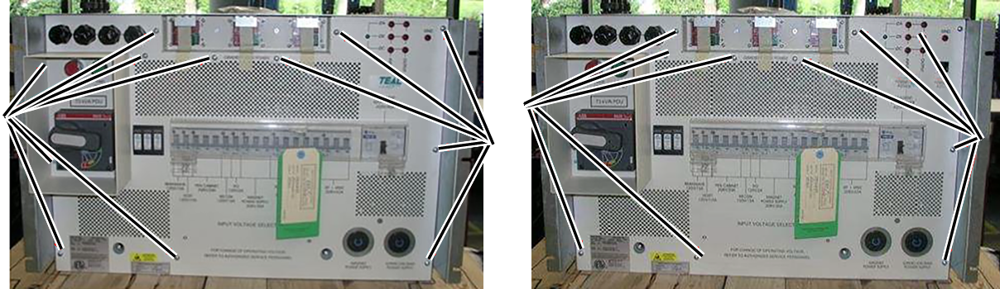
- Carefully pull on the front panel, and angle it down and away from the unit.Note Be careful not to damage the leak sensor strip.
Figure 4. Removing the front panel 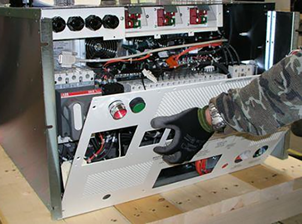
- Disconnect SW1 and SW2 from the back of the front panel. Turn the tabs counterclockwise and carefully pull them away from the panel.
Figure 5. SW1 and SW2 tabs 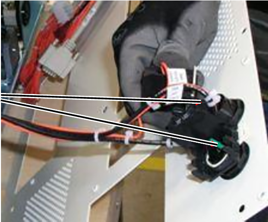
- Disconnect the P8 and J8 15-pin housing connectors. Press down on the locking tabs and pull the connectors apart.
Figure 6. P8 and J8 housing connectors 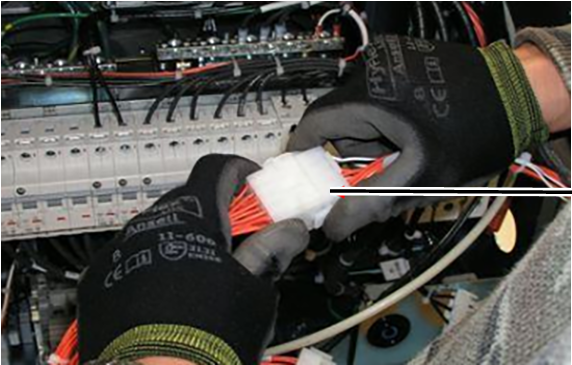
- For both XGD and XGD2, remove the three 10-32 x 1/2 screws from the PDU receptacle assembly, which is on the bottom of the unit.Note If you are replacing a faulty Delta power supply in an existing blind-mate bracket assembly, you do not need to remove these screws; in a subsequent step you will unlock the mounting pins to remove the power supply.Note Do not recycle the screws, as you will use them to reattach the assembly.
Figure 7. PDU receptacle assembly screws 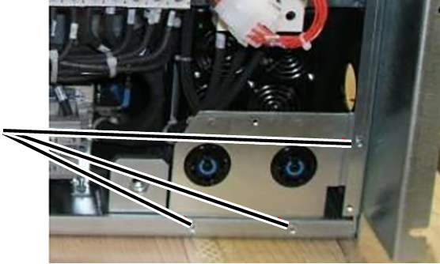
- Lift the assembly away from the unit.
- If any wires attached to the circuit breaker(s) will prevent you from having enough space to remove the power supplies, do one of the following:
- Use masking tape and a marker to label these wires, and then disconnect them.
- Remove the mounting screws from the circuit breaker(s), and move the circuit breaker(s) to the side.Note Do not recycle the screws, as you will use them to reattach the circuit breaker(s).
Figure 8. Impeding wires attached to circuit breakers - XGD (left) and XGD2 (right) 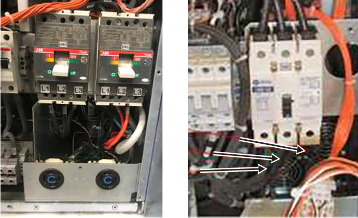
- Remove the two Keps nuts and washers that secure the power supply assembly, and the two Keps nuts and washers that secure the ground wires.Note Do not recycle the nuts and washers, as you will use them to reassemble the power supply assembly and reattach the ground wires.
Figure 9. Keps nuts and washers 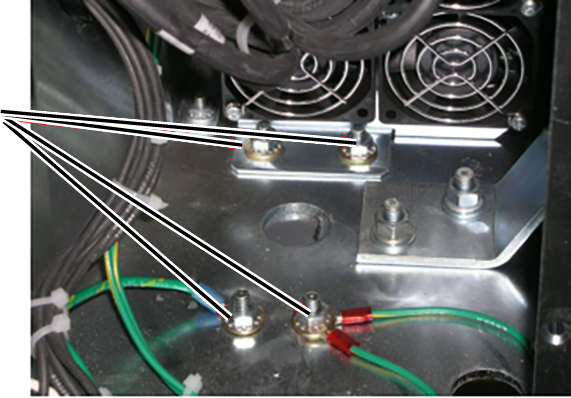
Note If necessary, cut the tie that secures the power supply harness to increase slack.Figure 10. Power supply harness tie 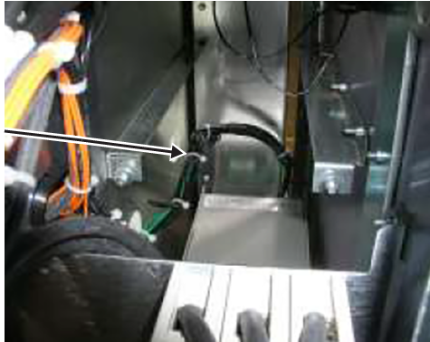
- Carefully pull the power supply assembly out, lifting it over the studs and moving it forward out of the PDU.
Figure 11. Removing the power supply assembly* 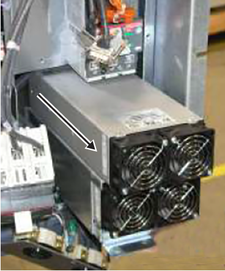
*The power supply assembly in this image is a Condor, but the process of removing a Delta power supply assembly is the same.
Note Make sure to move the RF cable out of the way so the power supply housing does not damage the cable's outer jacket.Figure 12. RF cable 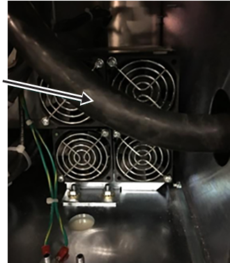
- If this is the first time that Delta power supplies are being installed, do the following:
- Use masking tape and a marker to label the run number and description on each wire connected to the Condor terminal block, located at the rear of the power supply.
Figure 13. Terminal block on the Condor power supply assembly 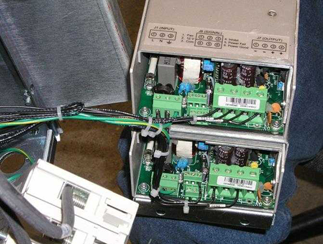
Table 1. Terminal block wires From Condor terminal block slot Run number Description To Delta terminal block slot PS1 J1 #1 89 L AC Input Line 1 PS1 J1 #2 90 N AC Input Neutral 2 PS1 J1 #3 91, 99 G AC Input Ground 3 No connection No connection No connection 4 PS1 J7 #1 93 PS1- Return 5 PS1 J7 #2 107 PS1- Return 6 PS1 J7 #3 108 PS1+ 48V 7 PS1 J7 #4 94 PS1+ 48V 8 PS2 J7 #1 95 PS2- Return 9 PS2 J7 #3 96 PS2+ 48V 10 PS2 J6 #3 97 B1 Common 11 PS2 J6 #4 98 C1 Inhibit 12 - Disconnect the wires from the faulty power supply assembly.
- Attach the marked wires to the terminal block on the Delta power supply bracket, matching the wire labels to the labels on the bracket.Note The Delta labeling shows the run number and the terminal block number with description (pin 1 is on the left).
Figure 14. Pin 1 on the Delta power supply brackets - existing (left) and blind-mate (right) 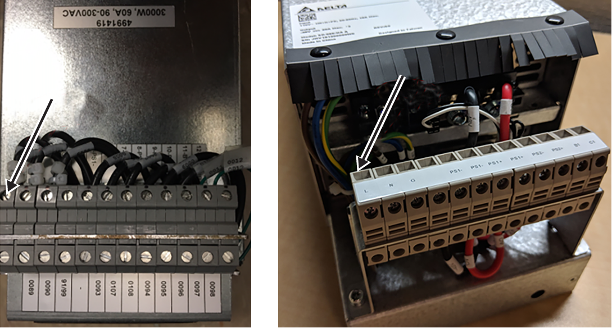
- Use masking tape and a marker to label the run number and description on each wire connected to the Condor terminal block, located at the rear of the power supply.
- If you are replacing a faulty Delta power supply, complete the following substeps to remove the power supply from the power supply bracket.
Delta bracket type Substeps Existing (5140621-10) - Loosen the bottom three screws on one side of the power supply bracket.Note Do not remove the screws from the bracket.
Figure 15. Power supply bracket screws 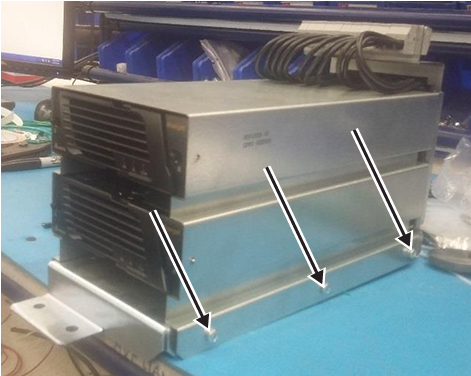
- Disconnect the power supply connector from the rear of the power supply (PS1 if you are replacing the top power supply; PS2 if you are replacing the bottom power supply).
Figure 16. Power supply connectors 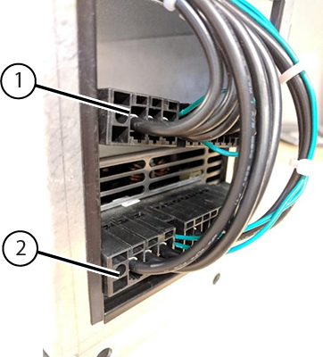
1 PS1 connector 2 PS2 connector - Push the slide buttons on the left and right sides of the front of the power supply to release the mounting pins from the holes on each side of the bracket.
Figure 17. Power supply slide buttons and mounting pins 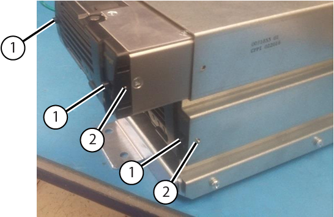
1 Slide buttons 2 Mounting pins - Carefully pull the power supply from the bracket.
Blind-mate (5343114-10) - Push the slide buttons on the left and right sides of the front of the power supply to release the mounting pins from the holes on each side of the bracket.
Figure 18. Power supply slide buttons and mounting pins 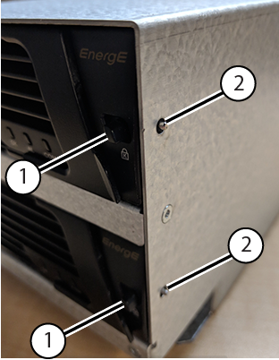
1 Slide buttons 2 Mounting pins - Carefully pull the power supply from the bracket.
Figure 19. Removing the power supply from the bracket - top supply (left) and bottom supply (right) 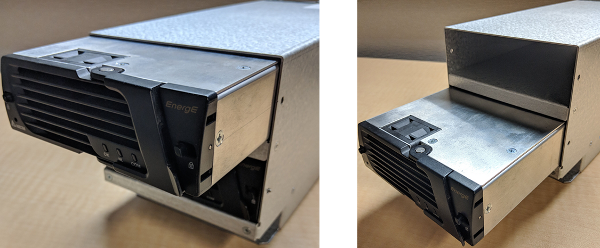
- Loosen the bottom three screws on one side of the power supply bracket.
- Complete the following substeps to install a new Delta power supply.Note If this is the first time that Delta power supplies are being installed, you must perform this step twice to install both power supplies.
Delta bracket type Substeps Existing (5140621-10) - If not already done, loosen the bottom three screws on one side of the power supply bracket.Note Do not remove the screws from the bracket.
Figure 20. Power supply bracket screws 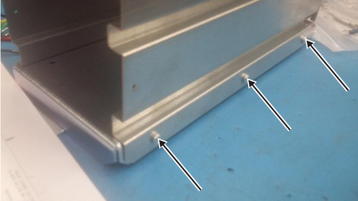
- Align the Delta power supply with the empty slot in the bracket, and begin pushing the power assembly into the slot.
- Attach the power supply connector to the rear of the power supply (PS1 if you are replacing the top power supply; PS2 if you are replacing the bottom power supply).Note The harness is manufactured such that the PS1 harness will only reach the top power supply, and the PS2 harness will only reach the bottom power supply.
Figure 21. Power supply connectors 1 PS1 connector 2 PS2 connector - Continue pushing the power supply into place. Then push the slide buttons on the left and right sides of the front of the power supply to extend the mounting pins through the holes on each side of the bracket.
Figure 22. Power supply slide buttons and mounting pins 1 Slide buttons 2 Mounting pins - Tighten the bottom three screws on the side of the power supply bracket.
Figure 23. Power supply bracket screws
Blind-mate (5343114-10) - Align the Delta power supply with the empty slot in the bracket.
Figure 24. Inserting the power supply - top supply (left) and bottom supply (right) - Carefully push the power supply into place. Then push the slide buttons on the left and right sides of the front of the power supply to extend the mounting pins through the holes on each side of the bracket.
Figure 25. Power supply slide buttons and mounting pins 1 Slide buttons 2 Mounting pins
- If not already done, loosen the bottom three screws on one side of the power supply bracket.
- Align the Delta power supply assembly with the empty slot in the PDU, tilting the assembly so that the terminal block clears the CB2 bracket.
Figure 26. Aligning the Delta power supply assembly 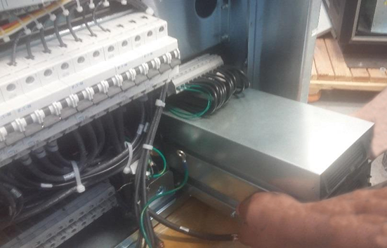
- Push the power assembly into place.Note Make sure to move the RF cable out of the way so the power supply housing does not damage the cable's outer jacket.
Figure 27. RF cable - Reinstall the two Keps nuts and washers on the power supply assembly bracket, and the two Keps nuts and washers that secure the ground wires.
Figure 28. Power supply assembly bracket attachments 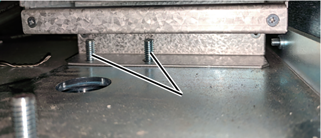
- If any wires attached to the circuit breaker(s) prevented you from having enough space to remove the power supplies, and you either disconnected the wires or removed the circuit breakers(s), reassemble them.
- For both XGD and XGD2, put the PDU receptacle assembly in position, and reinstall the three 10-32 x 1/2 screws.
Figure 29. PDU receptacle assembly screws Note For blind-mate bracket assembly, subsequent repairs only require unlocking the mounting pins to remove the power supplies. - If this is the first time that Delta power supplies are being installed, complete the following substeps to switch the auxiliary (AUX) contact wires on the CON1 AUX switch from Normally Closed (NC) to Normally Open (NO).Tip If you need more room to access the AUX terminals on the AUX switch, remove the AUX switch. In the XGD, carefully push the tab on the bottom of the AUX switch to release it; in the XGD2, insert a small flat-head screwdriver between the CON1 and the AUX switch to carefully pry the switch away from the contactor.
Figure 30. Removing the AUX switch - XGD (left) and XGD2 (right) 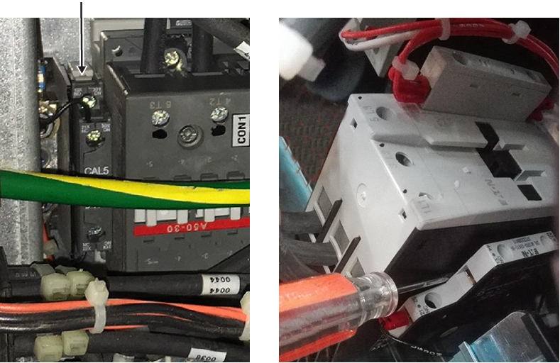
- Use a Phillips screwdriver to disconnect wire 97 from terminal 21, the NC contact.Note Do not remove the screw from terminal 21; tighten the screw once the wire is removed.
- Reconnect wire 97 to terminal 13, the NO contact.
- Use a Phillips screwdriver to disconnect wire 98 from terminal 22, the NC contact.Note Do not remove the screw from terminal 22; tighten the screw once the wire is removed.
- Reconnect wire 98 to terminal 14, the NO contact.
- If you previously removed the AUX switch, reinsert it next to the CON1 contactor.Note You will hear a click when the AUX switch is fully installed on the contactor.
- Use a Phillips screwdriver to disconnect wire 97 from terminal 21, the NC contact.
- Reconnect the P8 and J8 15-pin housing connectors.
Figure 31. P8 and J8 housing connectors - Reconnect SW1 and SW2 to the back of the front panel, and turn the tabs clockwise.
Figure 32. SW1 and SW2 tabs - Make sure the toggle switch on the control board, which is located above the power supplies, did not get bumped during the the power supply installation. For XGD, the switch should be toggled to the left, identified by a green LED; for XGD2, the switch should be toggled to the right, identified by a yellow LED.
- Put the front panel on the PDU, and secure it with the 10-32 x 1/2 screws using a Phillips screwdriver.Note Be careful not to damage the leak sensor strip.
Figure 33. PDU front panel screws - XGD (left) and XGD2 (right) - Reinstall the four 6-32 x 3/8 screws on the circuit breaker guard using a Phillips screwdriver.
Figure 34. PDU circuit breaker guard screws - If this is the first time Delta power supplies were installed, apply the GE equipment maintenance sticker (5661793) on the bottom of the circuit breaker guard, and note the following information:
Date_______________________________
Component___This PDU is equipped with Delta 48V PS (5745311)____
Employee ID________________________
Figure 35. GE equipment maintenance sticker location (5661793) - XGD PDU (left) and XGD2 PDU (right) 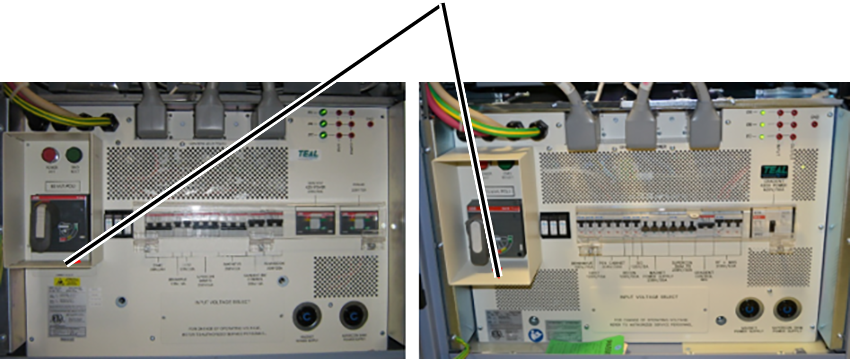
Finalization
- Restore the power.
- Remove LOTO from the PDU. See Removing LOTO - PGR Power Distribution Unit (PDU)/Gradient Subsystem.
- Do a check scan. See Doing a check scan.